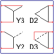

DcBrakeSettingsSetting for DC current braking |

|
Information
This information is part of the Modelica Standard Library maintained by the Modelica Association.
Lets the user choose the layout, and determines the necessary DC current for DC current braking of an induction machine.
The icon shows the four layout variants. Phases with half the current are depicted with half the line thickness, phases with zero current are depicted with dashed line.
Parameters (6)
| INominal |
Value: 100 Type: Current (A) Description: Nominal RMS current per phase |
|---|---|
| layout |
Value: "Y3" Type: String Description: Braking connection layout |
| terminalConnection |
Value: if layout == "Y3" or layout == "Y2" then "Y" else "D" Type: String Description: Terminal connection |
| connect3 |
Value: layout == "Y3" or layout == "D3" Type: Boolean Description: Connect 3rd terminal |
| Idc |
Value: if layout == "Y3" then INominal * sqrt(2) elseif layout == "Y2" then INominal * sqrt(3 / 2) elseif layout == "D2" then INominal * 3 / sqrt(2) else INominal * sqrt(6) Type: Current (A) Description: DC braking current |
| is |
Value: if layout == "Y3" then Idc * {1, -1 / 2, -1 / 2} elseif layout == "Y2" then Idc * {1, -1, 0} elseif layout == "D2" then Idc * {2 / 3, -1 / 3, -1 / 3} else Idc * {1 / 2, -1 / 2, 0} Type: Current[3] (A) Description: Phase currents |
Used in Examples (1)
|
Modelica.Electrical.Machines.Examples.InductionMachines Induction machine with DC current braking |